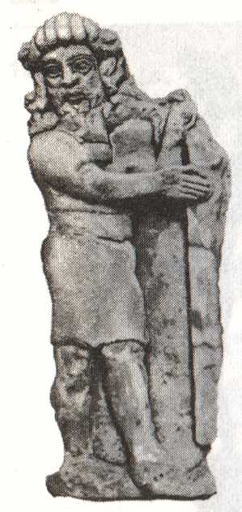
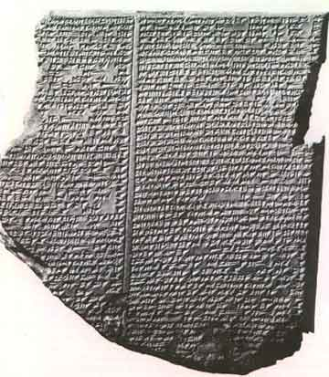
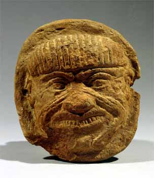

|

Texto de
Susana
Lopes de Alexandria

Gilgamesh:
Picard fala de um dos
maiores picos de todos os tempos

|
Num esforo de comunicao com o
capito Tamariano, Picard tenta contar-lhe uma das aventuras do
poema pico Gilgamesh, escrito por volta de 1900
a.C. Para entender o contexto no qual esse poema foi escrito,
preciso rever um pouco de histria. A segunda civilizao mais
antiga do mundo (a primeira a egpcia) foi a mesopotmica,
que comeou no vale dos rios Tigre e Eufrates (na regio do
atual Iraque), por volta de 3.500 a.C. No passado, essa civilizao
foi chamada de babilnica ou babilnico-assria. Sabe-se hoje,
porm, que no foi fundada nem pelos babilnios nem pelos assrios,
mas por um povo anterior, os sumrios. Por isso, hoje os
historiadores preferem referir-se a toda a civilizao como
"mesopotmica".
Os sumrios, pioneiros dessa civilizao, falavam uma lngua sem relao com nenhuma lngua conhecida por ns. Fundaram vrias cidades entre 2800 e 2340 a.C., entre as quais as mais conhecidas so Ur, Uruk e Lagash. O perodo de predomnio sumrio foi interrompido pela invaso de Sargo de Acdia, que reinou aproximadamente entre 2334 e 2279 a.C. Os acadianos eram semitas, povos do Oriente Prximo que falavam lnguas aparentadas entre si (os principais povos semticos de hoje so os rabes e os judeus). Sob a chefia de Sargo, os acadianos fundaram o primeiro grande imprio militar na Mesopotmia. Mas esse imprio entrou em declnio por volta de 2200 a.C., suplantado por um renascimento sumeriano, liderado pela cidade de Ur.  A ascenso dos antigos babilnios inaugurou uma segunda fase importante da civilizao mesopotmica, aps o perodo sumeriano. Os babilnios estabeleceram um estado autocrtico e durante o reinado de seu mais famoso rei, Hamurabi (1792-1750 a.C.), estenderam seu domnio at a Assria. Foi neste reinado que se escreveu o famoso Cdigo de Hamurabi, o primeiro cdigo de leis de que se tem notcia. Mas depois dessa poca o imprio entrou em declnio, at ser finalmente derrubado pelos cassitas, aproximadamente em 1550 a.C. Os cassitas foram sucedidos pelos assrios (cujo auge ocorreu entre os sculos 8 e 7 a.C.), que, por sua vez, foram derrubados pelos caldeus. O mais famoso rei dos caldeus (ou neo-babilnios) foi Nabucodonosor (que reinou entre 606 e 562 a.C.) --aquele que construiu os "jardins suspensos da Babilnia", uma das sete maravilhas do mundo antigo. Os caldeus foram conquistados pelos persas em 539 a.C., sob o comando de Ciro, o Persa. Gilgamesh um hbrido das culturas sumria e babilnia. Seu heri, Gilgamesh (veja a estatueta de pedra, encontrada nas escavaes da cidade de Khorsabad, no Iraque), era uma figura histrica real --um rei sumrio que governou Uruk, na Babilnia, s margens do rio Eufrates, por volta de 2600 a.C. Suas faanhas estimularam tanto a imaginao de seus contemporneos que eles comearam a contar histrias fantsticas sobre ele. Narradas e renarradas ao longo dos sculos em lngua sumria, as histrias tornaram-se cada vez mais incrveis, at que se transformaram em pura fico. Essas narrativas eram to interessantes que os vrios conquistadores semitas passaram a traduzi-las para seus prprios dialetos. O pico sobrevivente Gilgamesh representa o estgio final desse processo. Por volta de 1900 a.C. um poeta semita (um antigo babilnio) alinhavou cinco das histrias de Gilgamesh numa estrutura pica, e esta verso do magnfico poema que conhecemos hoje. O poema, escrito em tbulas de argila, sobreviveu no apenas na lngua acadiana (aparentada do hebraico), mas tambm em hitita, falado na sia Menor (lngua derivada do indo-europeu, famlia de lnguas que inclui o grego, o ingls e o portugus).  As lnguas citadas acima eram registradas na famosa escrita cuneiforme, criada pelos sumrios, que consiste em caracteres em forma de cunha, gravados em tbulas de argila com um junco de ponta quebrada. A princpio um sistema pictogrfico, gradualmente se transformou num conjunto de sinais silbicos e fonticos, num total de aproximadamente 350. Nenhum alfabeto jamais se derivou dele, mas a escrita cuneiforme ainda assim tornou-se o meio corrente para transaes comerciais em todo o Oriente Prximo entre mais ou menos 3000 e 500 a.C. A verso mais completa de Gilgamesh deriva de doze tbulas de pedra, em lngua acadiana, encontradas no sculo 19 nas runas da biblioteca de Assurbanipal, rei da Assria entre 668 e 627 a.C., em Nnive (hoje Kuyunjik, no Iraque). A biblioteca foi destruda pelos persas em 2612 a.C. e todas as tbulas esto danificadas. As lacunas existentes foram preenchidas parcialmente por vrios fragmentos de tbulas encontradas em outros lugares na Mesopotmia. Das trs mil linhas do poema, somente duas mil se conservaram e foram decifradas. As tbulas trazem o nome de seu autor, Shin-eqi-unninni, fato raro no mundo antigo. o autor mais antigo a quem podemos chamar pelo nome! Nessa verso, o poema comea com um prlogo elogioso a Gilgamesh, parte divino e parte humano, grande construtor e guerreiro, conhecedor de todas as coisas da terra e mar. A fim de conter o governo cruel de Gilgamesh, o deus Anu criou Enkidu, um homem selvagem que vivia entre os animais. Em pouco tempo, porm, Enkidu foi iniciado no modo de vida urbano e partiu para Uruk, onde Gilgamesh o esperava. A tbula 2 descreve um teste de fora entre os dois homens, do qual Gilgamesh sai vitorioso. Dali para frente, Enkidu torna-se amigo e companheiro de Gilgamesh. Nas tbulas 3 a 5, os dois homens so enviados a Huwawa, o guardio divino de uma remota floresta (veja foto abaixo), mas o resto da histria no est registrado nos fragmentos das tbulas.  Na tbula 6 Gilgamesh, que retornara a Uruk, rejeita a proposta de casamento de Ishtar, a deusa do amor. Ento, com a ajuda de Enkidu, mata o touro divino que Ishtar havia enviado para destru-lo (esta a histria que Picard conta ao capito Tamariano). A tbula 7 comea com Enkidu narrando um sonho no qual os deuses Anu, Ea e Shamash decidem que ele deve morrer por ter matado o touro. Enkidu ento adoece e morre. O lamento de Gilgamesh pela morte do amigo e o funeral de Enkidu so narrados na tbula 8. Depois disso, Gilgamesh faz uma perigosa viagem (tbulas 9 e 10) procura de Utnapishtim e sua mulher, sobreviventes do Dilvio Babilnico, a fim de aprender com ele como escapar da morte. Ele finalmente encontra o velho casal, que lhe conta a histria do Dilvio (muitos dos elementos dessa histria so semelhantes de No, contida no Velho Testamento, inclusive o fato de o casal ter-se salvo construindo uma arca). Utnapishtim lhe mostra tambm onde encontrar uma planta que traria de volta sua juventude (tbula 11). Mas depois que Gilgamesh obtm a planta, ela comida por uma serpente. Por esta razo, segundo o pico, que as serpentes rejuvenescem a cada troca de pele. Infeliz, Gilgamesh retorna a Uruk. Um apndice do poema, a tbula 12 relata a perda dos objetos chamados pukku e mikku (talvez "tambor" e "baqueta"), dados a Gilgamesh por Ishtar. O pico termina com o retorno do esprito de Enkidu, que promete recuperar os objetos e depois faz um terrvel relato sobre o mundo dos mortos. Gilgamesh considerado um
dos maiores picos de todos os tempos, altura da Ilada
(que narra a Guerra de Tria) e da Odissia (sobre as
viagens de Ulisses), ambos atribudos ao poeta grego Homero, que
teria vivido por volta de 850 a.C. (alis, uma obra de Homero
--em grego!-- que o capito Picard est lendo ao final do episdio).
Picard em poucas horas consegue decifrar todo o sistema da
linguagem utilizada pelos Tamarianos. Na vida real, as coisas no
so to fceis assim. Apenas em 1872 o mundo moderno e
ocidental teve conhecimento da obra de Gilgamesh, aps vrias
escavaes arqueolgicas empreendidas na regio do Oriente Mdio
e a rdua decifrao de numerosas inscries (s a
biblioteca de Assurbanipal, de Nnive, forneceu 22 mil tbulas
gravadas) -- ou seja, quase quatro milnios depois de o poema ter
sido escrito!
|